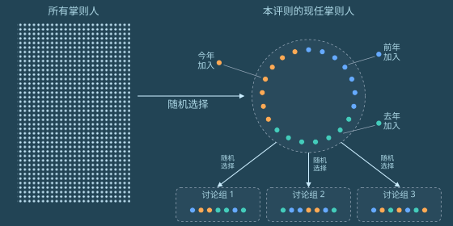
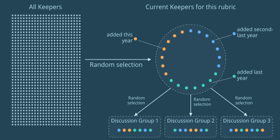

格拉迪亚斯低着头，慢慢朝自家门口走，好让带兜帽的隐私袍顺带挡住冷雨。门前那一小块地方有片小檐遮着。走到门前，他才慢慢摘下兜帽，从小桌上拿起一个餐盒——泽国餐车的10号，老样子。然后他抬手，把手表贴向门边一个发着绿光的圆圈。
门开了。格拉迪亚斯叹了口气，走进去，任门在身后合上。他沿楼梯下到地下室，把餐盒放在桌上。灯亮了，一段模拟自然声响的柔和背景音渐渐响了起来，身后另一扇门自动关上。
格拉迪亚斯脱下隐私袍，颈带还戴着，把袍子扔到椅背上晾着，然后坐上另一把宽大柔软的椅子，椅背向后倾了大约45度。
手表震了一下：本地网络认过它的身份，允许它接入了。
他微微张嘴，通过颈带低声下了一道指令：接通莫夫。
几乎立刻，莫夫就接了。
“你那边安全吗？”莫夫问。
“我是对着喉震颈带低声说的，你的声音通过耳机进来。我们待在一栋上了锁、隔音良好的房子里，这间地下室是密封的，门和墙都贴着隔信箔。外面下着真雨，里面放着假雨声。这样够安全了吗？”
“这年头，谁知道呢。”
“行啊，你要想的话，我可以把假雨声换成一片人声嘈杂，让人声更难被剥离出来，再戴上耳机。”
“不用了，就这样吧。你这套布置已经比大多数人强了。”
“我今天就提交路线选择。我要当掌则人。”
静了几嘀嗒。
“什么时候定的？”
“几天前。”
“至少过去一整年，你都铁了心要当监审官。”
“真正能带来改变的权力在掌则人手里。评则本身比——”
“是他吧？那位神秘的绅士，德尔瓦特？”
又静了几嘀嗒。
“塞拉知道吗？”
“当然知道，我两天前就告诉她了。”
“在我之前。”
“那当然，她是我——”
“可你还是没告诉她……你为什么改主意，对吧？”
“你查到的那些东西，就不能直接告诉我吗？”
“好吧，行。”
“还记得我上次跟你说的吧——德尔瓦特一散会，我就跟了上去，结果他直接走到大梅港另一家毫不相干的茶馆，50分钟后在那儿又见了一拨人。他从另一道门出去，我就在那儿把人跟丢了。”
“嗯，我记得。”
“你猜怎么着，这事还没完。我往那两个地方各挑了个不起眼的角落，扔进去一只侦察蝠——两只都被揪了出来，没戏。可接下来3天，我特意来回跑这两个点。前两天两边都安安静静。到第三天，我又看见德尔瓦特了。他每天都换一件新隐私袍，鞋垫重新随机化，步态和身高都跟着变，可他有个弱点，让我认出了他。”
“什么弱点？”
“他的举止。他四下张望的次数比常人少得多，整个人只盯着自己要去的方向。我牺牲过两次侦察蝠，故意弄出干扰的响声。大多数人至少会偏一下头；德尔瓦特不会。”
“我就这么着又把他找着了——他正从一家茶馆走向下一家。”
“这么说他一直在见人？”
“对。也许他想劝去当掌则人的，不止你一个。”
“那我们怎么办？”
“眼下看，只有一条路：先顺着德尔瓦特说的走，同时多留个心眼。”
“总之，你该歇歇了。记住，明天我们还要去公民大会。”
格拉迪亚斯挂断了通话。他拿出手持终端，接着研究掌则人的治理结构。

格拉迪亚斯记下：结构跟监审官类似，只是更大——监审官是3组、每组3人，掌则人是3组、每组7人。合议庭不属于掌舵会，但他记得也很像：先是两两成对、各自分开评议，然后才投票；另有一人专管破平局，5人意见取中位数定案。掌则人小组比合议庭和监审官小组人多，这说得通：一条评则比任何一次单独裁决都重要。合议庭人少也说得通：5名法官只负责一轮，而且总能上诉。
格拉迪亚斯在几个界面之间来回切换，翻看这一轮计划评估的评则清单：
| 评则名称 | 摘要 | |
|---|---|---|
| 5 | 实体空间的应急准备 | 设有安全庇护所、耐用应急物资、完全或部分脱离电网的，适用较低税率档；建筑设计不安全或脆弱的，适用较高税率档。 |
| 6 | 硬件开放度 | 尊重用户维修权、公开可用的原理图、设计及其他源文件、遵循开放标准的，适用较低税率档；故意制造不兼容、限制可改造性及相关反竞争做法的，适用较高税率档。 |
| 7 | 室内空气洁净 | 税率与实测的平均空气质量指标成比例——二氧化碳、PM2.5 及其他主流指标。计算平均时，人员在室时间更长的时段权重更高。适用于容纳超过20人的场所。 |
格拉迪亚斯继续往下翻掌则人的文档。大约30分钟后，他累了，往后靠进椅子里。他让翡翠根据自己到现在看过的内容出一套测验题，帮他复习。翡翠应了一声，开始在后台干活。
然后他放下手持终端，攒了点力气从椅子上挪到床上，睡着了。
3724年雨月13日
格拉迪亚斯出了门，穿着隐私袍，没戴面罩，也没上兜帽。他向右转，沿街往前走。
街道两侧是一排排跟他家一样的房子。人行道两边种着树，投下荫来。大多数房子是几种大同小异的默认样式，米色、浅蓝、灰色，看上去都是最近20年里盖的。
不过大约每10栋里就有一栋带点怪花样。格拉迪亚斯路过的第一栋，阳台造得像科幻片里的飞船。第二栋压根不是标准住宅，而是3栋小房子，一看就是集装箱改的。它们看起来倒像是他会住的地方，格拉迪亚斯想，他甚至喜欢看它们，可它们一出现，这片街区就再也谈不上整齐了。
第三栋侧面开了家咖啡馆。几个人站在外头喝茶。格拉迪亚斯想起塞拉几年前的一篇博客。在英格尔沃，这种事绝不可能被允许，他想——住宅区就是用来住人的。代价是：在英格尔沃，你要是住错了地方，去最近的咖啡馆得走一公里半。而在这儿，他没打算找，走了不到300米就撞见一家。
最后，格拉迪亚斯到了目的地：一个就在第一个路口拐角处的小型社区与活动中心。他看见有人陆续进来，有走路的，也有几辆出租车在楼旁街上减速停下。他向右转，跟所有人一样从同一个入口进去。
“莫夫，你在这儿！”他喊了一声——那声音同时低得只有颈带收得到，又冲得让颈带把它当成喊叫。
“啊，见到你真好，格拉迪亚斯！”
“今天大会的主题是什么？”
“在讨论我们想要更多什么样的公共空间，好给面对面社交多造些机会。他们担心这种机会越来越少了——现在大家不只在银聊和蓝鲸上聊，还跟翡翠和别的 AI 聊。”
“有道理。”
他们听见一声哨响。其他参与者开始往其中一间会议室里走。格拉迪亚斯和莫夫跟了上去。
屋里摆着5张桌子，每张配10把椅子，前方是台区，立着一个供单人发言的讲台。格拉迪亚斯和莫夫一进去，就感到一阵微风——吊扇往下送风，同时把从外面抽进来的新风补上。格拉迪亚斯抬头，还看见天花板上似乎洒下淡淡的紫光。八成是远紫外消毒灯，他想。
他们挑了一张桌子坐下。
一个年纪偏大的姑娘在格拉迪亚斯旁边坐下，做了自我介绍。
“你好，我叫佩莱。”
“我叫格拉迪亚斯。”
“很高兴认识你。”
大约半分钟后，一个男人走上讲台，隐私袍没上兜帽，也没戴面罩。他顿了顿，开口说话。
“欢迎大家！”
屋里立刻安静下来。
“第一次来这个大会的，欢迎你们，也谢谢你们到场。我叫阿拉盖尔，做宣谕使7年了。这是本学期大会的第四场，主题是怎么改善维里迪亚的公共空间，让面对面社交更顺畅。”
“不管你是新来的，还是一直都在的，都非常感谢你们出席。”
格拉迪亚斯用眼角瞥见佩莱取出一副颈带戴上，转向他，开始低声说话。片刻之后，他的手表震了。手表判断出佩莱想问他什么，自动开了一条通话频道。
“再跟我说一遍，宣谕使到底是干什么的？”格拉迪亚斯从耳机里听到她问。
格拉迪亚斯还没想好怎么答，莫夫已经接上了话。
“宣谕使是掌舵会成员——掌则人或者监审官——每年被随机抽中退休，去当个类似大使的角色，促进掌舵会和公众之间的相互理解。我记得图谱资助的成员或者法官也能当宣谕使。”
“目的是给出一点透明度。掌则人和监审官都很封闭，这是为了不被操纵，可他们也不想让人误会，进而怀疑整套制度。所以宣谕使充当桥梁。他们会把自己的思路、当年怎么做的事全摊开讲——但只在自己已经没有权力之后，这样就没人能影响他们。”
“那所有宣谕使都要主持大会吗？”
“看各人选择。有人演讲，有人写书，有人帮忙组织大会。最不爱跟人打交道的，就只写书，或者在银聊上当几个子版主。”
“你要是想弄清自己对加入掌舵会有没有兴趣，找宣谕使聊聊也很合适。”莫夫补了一句。
“你想加入吗？”他又问，随即赶紧打住——他意识到自己差点犯了大忌：在一个陌生人面前暴露了自己掌舵会成员的身份。
“不了，我已经定了。我要读化学。”
“不错！”
“我朋友觉得我不会喜欢，还得拼死拼活。可我喜欢这种挑战。”
他们把注意力转回讲台。
“好，我想请每桌的人轮流讲讲：你在哪个公共空间待过，在那里有过什么让你喜欢的体验。我们做半个长时。我会到各桌转转，有问题尽管问。”
“开始吧！”
阿拉盖尔不再说话，慢慢走下讲台，往房间一侧走去。
格拉迪亚斯这桌，一个中年女人轻轻举手。其他人点头，把第一个发言的机会让给她。
“我很喜欢加拉纳尔广场，就是卡利马尔边上那个，往南大概一公里。我总去那儿喝茶吃东西，看鸟看树。那地方真好。树好，茶好，荫也好，还总有有意思的人过来聊两句。”
格拉迪亚斯插话进来。
“我喜欢它旁边还挨着个游乐场。孩子小的时候，我们一家常去，大人喝茶，放孩子们自己去玩。”
那女人和另外几个人点头。
“那儿还有个小图书馆和科学博物馆！”佩莱补了一句。
她刚说完，他们就听见脚步声。阿拉盖尔走了过来，站在他们旁边。
“阿拉盖尔，”佩莱问，“这些大会的结果，最后到底怎么变成实际的改变？”
“好问题。很多人都在看这些大会在做什么。掌则人讨论税则评则时会查大会的结果，琢磨他们想激励房产的哪些特征。”
“有时候掌则人也会悄悄直接来参加大会。谁知道呢，说不定这会儿就有一位掌则人或者见习官坐在桌边。”他用开玩笑的语气补了一句。
阿拉盖尔停了片刻，又开口，补了最后一句。
“还有图谱资助的成员，以及所有参与二次方资助的人。这是个很值得看的信号。”
就在这时，格拉迪亚斯的手表震了，屋里每个人的手表同时震了起来。
格拉迪亚斯看了眼手表。房间空气过滤器里的传感器检测到了某种流感病毒。
几乎立刻，吊扇转得更快，紫光也更亮了。屋里大约一半人从口袋里掏出口罩戴上，有布面的，也有弹性体呼吸器。另一半什么也没做，只是看着。还有很多人戴上颈带，打算接下来的对话都靠它低声说——万一自己就是病人呢：病人不大声说话，传播就少。整个过程显得自然而自动，每个人似乎都尊重别人的选择。
另一个女人开口了。她通过颈带低声说话，可在格拉迪亚斯听来，耳机里传出的声音清楚自然，就像她当面在说一样。
“往西再走一公里左右，有个差不多的广场，塔帕亚广场。设施也类似——能坐下，能喝茶，旁边有店。可那边的游乐场简陋得多，我儿子说坐着都不舒服。而且我总觉得那儿没加拉纳尔热闹。所以也许游乐场真的很要紧。”
“塔帕亚的图书馆也是一个样。书要么是些无聊的商业书，要么是没人看得懂的外文——不是古贝尔帕基语，就是哈拉格米尔来的什么东西。”
莫夫又接了话。
“啊，我知道那边怎么回事。有条评则奖励一楼临街的空间被真正用起来，可很多人钻空子——塞进去些理论上达标、实际没人想用的东西。我猜塔帕亚的经营者觉得自己的主要客群不喜欢身边有小孩。”
“那条评则真该改改了……”
佩莱和另一个女人都点头。
莫夫往后一靠，对话继续。别人接着互相问答时，格拉迪亚斯和莫夫都在心里记着：大家说出的偏好里，共同点在哪里。后台的翡翠也在记。
离开大会、跟莫夫道过别后不久，格拉迪亚斯来到一家餐厅。门在他面前打开。他走进去，坐下。一台机器人滑到他跟前，给他看菜单。他按了几个键，点了水和一份沙拉。
他环顾餐厅。另外有4位客人坐着，都靠窗看景——两位单独坐，一组两人。
单独坐的两人里，一个戴着某种耳塞和颈圈，每分钟大约两次，张嘴动上几嘀嗒。格拉迪亚斯想，那不是通话，就是某种 AI 辅助辅导。另一个单独坐的人似乎什么也没做，纯粹在看风景。坐一起的那对都是女人，看样子三十几岁，正在聊天。隔着距离格拉迪亚斯能听清几个词——说的是她们儿子快要比的翔球赛。
几分钟后，一个还没完全成年的少年走进来。格拉迪亚斯一眼认出了他：费布里克。
“格拉德叔叔，在这儿碰到你真好！”
“费布里克！”
格拉迪亚斯张开手臂要抱他。费布里克抱了上来。
“上学去？”
“对，去学校。还有两天就考试了！”
“有把握吗？”
“我觉得有！今天考树，昨天我凭记忆从零写了两棵不同的有界深度树，还有基于哈希的前缀树。真弄懂了以后，太好玩了！”
“维尔和黛雅把你们照顾得好吗？”
“他们特别好。跟以前一样，特别上心。天天给我们做好吃的。而且爸给我买了个新算力盒！”
一个服务员把一杯茶递给费布里克，杯子带着密封盖。
“我来付。”格拉迪亚斯喊了一声。“快去上学吧，考试加油！”
“我想你，格拉德叔叔！”
费布里克跑出餐厅，左转，转眼就不见了。
几分钟后，格拉迪亚斯的水和沙拉到了。他慢慢吃完，走到柜台前付账。
桌面一个绿色圆圈的轮廓亮了起来。格拉迪亚斯把手表贴上去。
轮廓变红了。
| 支付失败。 |
|---|
| 余额不足。 |
格拉迪亚斯迅速翻了翻手持终端里的几个钱包，才想起自己忘了给自己转钱。他的钱大部分只有两条取用途径：要么在家取，要么万不得已时走社交恢复——6把密钥由预先选定的家人和朋友保管，凑齐其中4把联署即可。这些人彼此都不知道别的恢复人是谁。
他飞快地想办法。他让翡翠以他的信誉为抵押借一笔钱。手持终端花了一嘀嗒收集作废符、生成零知识证明，然后显示在格拉迪亚斯的手表上供他确认。
| 信誉担保借款申请 | |
|---|---|
| 工作经历：助教。 教授和5名学生给出好评。 | 作废符： 0x18f4...60c5 |
| 申请借款： | 2773齐普币 |
唯一会公开可见的信息，只有作废符和借到的金额。作废符是一段伪随机哈希，由他工作的公开评语以一种确定性、但不可关联的方式生成。它会被发布到密码学网络上，防止同一份信誉被拿去抵押两次。证明会确认这个作废符有效、它所代表的信誉足以借出这笔钱，此外什么也不透露。格拉迪亚斯的姓名对任何人都不可见。
格拉迪亚斯点下“提交”，交易飞进密码学网络。两嘀嗒后，交易确认，2773齐普币出现在他的钱包里。
格拉迪亚斯又贴了一次手表。
| 支付成功。 | |
|---|---|
| 基础价 | 10.5齐普币 |
| 税额 | 1.1齐普币 |
| 合计 | 11.6齐普币 |
在维里迪亚，乃至世界大部分地方，连销售税的支付都是零知识的。只有格拉迪亚斯和餐厅知道刚有一笔10.5齐普币的订单。销售税会实时、自动地送进政府。整套制度的执行不靠审计表格，而靠随机抽查——稽查的人上门点单，核实餐厅每次请求付款时用的都是纳税类交易。
格拉迪亚斯谢过服务员，慢慢走出餐厅。
出了餐厅，格拉迪亚斯继续沿街走，又走了几百米后向右转。经过几户人家，小路无缝融进一片森林。再走几百米，两侧开始出现用大石块砌成的房子。
这条路穿过卡利马尔区，格拉迪亚斯以前走过很多次。
他继续走，穿过空中步道，进了隧道，来到那个 Y 字形路口。这一次，贴着埃菲里昂勋爵那篇告示的海报不见了。他停了一会儿，然后——也许是他这辈子第二次——在路口向左转。他继续往前走。
小路很快回到地面。它从几条高速公路下面蜿蜒穿过，但一路上都有树遮着——尤其是公路在头顶的时候。
高速公路底面的涂鸦，还有底下的脏东西，感觉都比平时多。格拉迪亚斯说不准是最近打扫得不够勤，还是就这条路因为什么缘故没怎么维护。
不久，路开始向上弯，接成山侧一段笔直的露天阶梯，高200米。这地方格拉迪亚斯只来过一次：被授为见习官那次。
他爬了大约10分钟。这一通爬，加上身上的隐私袍，让他热得几乎要出汗——尽管外头很冷。终于到了顶。小路又变成隧道。隧道很快变成阶梯，爬完两段楼梯后，天光重新出现。格拉迪亚斯此刻站在一座塔顶层的空地上，四周是石墙。他能看见头顶的天空。身旁是一个绿色圆圈，比平时更大、更亮。塔边缘的座位上坐着10名掌舵会成员，全都穿着隐私袍。
格拉迪亚斯把手表贴向圆圈。墙上各处此前他没注意到的灯亮了起来，是一种独特的绿色。
几乎立刻，一名掌舵会成员开口了。
“欢迎，见习官。”
“你们可以叫我——”
“我们不该知道。保证这套程序落到正确的档案上，是密码学的事。”
“那我猜，你们可以按我证明里那个作废符的数字来叫我。”
几名掌舵会成员的身子不自在地绷了一下。他们没料到这场本该庄重、基本全程无声的程序里，会有人这样接话。但也有几个人往前倾了倾，像是乐见一点变化。
“好吧，372ef。你做好选择了吗？”
“做好了。”
“什么选择？”
“我申请成为掌则人。”
静了几嘀嗒。
“372ef，你可以再把手持终端贴一次圆圈，确认你的决定。”
格拉迪亚斯把手持终端贴向圆圈。
| 申请已确认。 |
匿名集、不可关联与侧信道需要一点基础
匿名集是观察者认为可能是谁发的候选名单；侧信道是从耗时、功耗这类行为里漏出的信息。
像收到匿名信时心里那份候选名单；你藏数字时猜错会停顿，停顿长短就出卖你猜对几位。
先读：混网
读完整教程 ↗密码学网络需要一点基础
一条公开可验证、全局一致、可编程的分布式账本，承载支付、信誉、治理和赏金。
像广场上谁都能翻、只能往后写、每页都抄上上页摘要的公共账簿。
先读：数字签名与公钥基础设施、哈希函数
读完整教程 ↗图谱资助与有向无环图需要一点基础
把公共资金排成一张有向无环图，每个节点由抽签产生的临时委员会决定它往下分的权重。
像国家财政的科目、款、项：跨科目的东西照样能领钱，不必为它新造一个交叉的上级部门。
先读：二次方资助
读完整教程 ↗哈希函数不需要背景
把任意长度的数据压成定长指纹：同样输入永远同样输出，但找不出两份内容不同的数据撞上同一指纹。
像图书馆的书脊标签：一本书压成一行字贴上书脊，你一眼认得出是它，却没法从这行字还原整本书；标签位有限，两本书可能撞上同一个标签。
读完整教程 ↗作废符与零知识抵押需要一点基础
作废符是公开、确定、一次性的一段哈希，用来回答这份资格是否已被用掉；抵押靠它烧掉一份信誉换钱。
像夜场的纸手环：上面写本场有效和VIP区，不写名字；进场撕掉的一半被收走当公开存根，同一编号出现两次就说明有人在造假。
先读：零知识证明
读完整教程 ↗门限密钥与社交恢复需要一点基础
把一把私钥拆成 n 份分散保管，任意 t 份能联署，少于 t 份永远还原不出。
保险箱钥匙被切成六块不规则碎片，单独一块什么都不是，凑齐四块才自动拼回整把。
先读：数字签名与公钥基础设施
读完整教程 ↗Gladias walked slowly toward the door of his house, keeping his head down so that his privacy robe with its hood could double as shielding from the cold rain. A small roof covered the area right in front of the doorstep. Once he got to the doorstep, he slowly took off his hood. He picked up a food box - the usual number ten from the Dzego food truck - from a small table. He then tapped his watch against a glowing green circle beside the door.
The door opened. Gladias sighed, entered, and let the door close behind him. He went down a set of stairs to the basement, and put the food box down on a table. The lights turned on, a gentle background noise simulating sounds from nature slowly ramped up, and another door automatically closed behind him.
Gladias took off his privacy robe, though keeping his neck band on, and threw the privacy robe onto the back of a chair to dry off. He sat down on another large soft chair that inclined back about forty-five degrees.
His watch buzzed as his local network authenticated it and let it connect.
He opened his mouth slightly and whispered an instruction through his neck band to open a call with Mov.
Almost immediately, Mov picked up.
"Are you in a secure location?", Mov asked.
"I'm whispering into a subvocalization neck band, and your audio is coming in to me by earpiece. We're inside a sealed basement room, the doors and the walls covered with anti-transmission foil, inside of a locked and well-insulated house. There's real rain outside, and the sound of fake rain inside. Secure enough for you?"
"These days you never know."
"Well, if you want I can change the fake rain to a crowd babble so it's even harder to strip, and put on headphones."
"Fine, no need. Your setup is better than most as it is."
"I'm submitting my track decision today. I'm going to become a Keeper."
For a few ticks, there was silence.
"When did you decide?"
"A few days ago."
"You've been set on becoming a Sentinel for at least the past year."
"The Keeper role is where the real ability to make change lies. The rubrics themselves are more important than-"
"It was him, wasn't it? The mysterious gentleman, Delwart?"
For a few ticks, silence again.
"Does Seila know?"
"Of course she does, I told her two days ago."
"Before me."
"Well of course, she's my-"
"But you still haven't told her ... why you changed your mind, have you?"
"Can you just tell me what you learned from your snooping already?"
"Okay fine."
"So remember what I told you last time - when Delwart left the meeting, I followed him, and it turned out that he just walked over to some totally different tea shop in GPH, and he had another meeting there fifty minutes later. He left through some different door, so I lost track of him there."
"Yeah I remember."
"Well guess what, the story goes further. So I threw my surveillance bat into an innocuous spot in both places - both of those got caught, no luck there. But I also made a point to re-visit both spots back and forth the next three days. Both spots kept quiet for two days. But on the third day, I caught sight of Delwart again. He always wears a new privacy robe every day, he re-randomizes his insoles to change his gait and his height, but he has one weakness that let me catch him."
"What is it?"
"His behavior. He looks around much less than the average person, he feels really focused on where he's going. I sacrificed a surveillance bat a couple of times to make distracting noises. Most people turn their heads at least a little bit; Delwart does not."
"And so that's how I managed to find him again, walking from one tea shop to the next."
"So he's having these meetings this whole time?"
"Yep. Maybe you're not the only person he's trying to convince to become a Keeper."
"So what do we do?"
"It seems like there's only one thing we can do right now. Go along with what Delwart says, and keep our eyes open."
"Anyway, you should get some rest. Remember, we have that citizens' assembly to go to tomorrow."
Gladias ended the call. He took out his hand device, and returned to studying the Keeper governance structure.

Similar to the Sentinels, Gladias noted, but bigger: Sentinels were three groups of three, Keepers were three groups of seven. Courts were not part of the Order, but they were also similar, he remembered: two pairs of two separately deliberating before they cast their votes, plus one as a tiebreaker, the median of their five views determining the judgement. The Keeper groups having more people than Courts and Sentinel panels made sense: a rubric mattered more than any one single decision. The Courts being smaller made sense too: five judges were just for one round and you can always appeal.
Gladias slid back and forth between various screens, and scrolled through the current rubric set planned for evaluation:
| Rubric title | Summary | |
|---|---|---|
| 5 | Emergency preparedness in physical spaces | Reduced tax bracket for presence of secure shelters, durable emergency supplies, full or partial grid-independence. Increased tax bracket for unsafe or fragile building design. |
| 6 | Openness in hardware | Reduced tax bracket for respecting user right to repair, publishing usable schematics, designs and other sources, and following open standards. Increased tax bracket for deliberate incompatibility, restricting modifiability and related anti-competitive practices. |
| 7 | Clean indoor air | Tax bracket proportional to observed average air quality indicators - CO2, PM2.5 and other mainstream measures. Average gives higher weight to higher-occupancy time periods. Applies to spaces that host more than 20 people. |
Gladias kept scrolling through the Keeper documentation. After about thirty minutes, he laid back on the chair, tired. He asked Emerald to come up with a quiz related to the information he viewed so far to help him study. Emerald acknowledged, and began working in the background.
He then put down his hand device, mustered the energy to get off the chair and onto his bed, and went to sleep.
3724 Rainmoon 13
Gladias exited his house, wearing a privacy robe without putting on the face cover or hood. He turned right, and began walking down the street.
On both sides of the street, there were rows of houses just like his. Trees lined both sidewalks to provide shade. Most of the houses had one of a few similar default styles, with beige and light blue and grey colors, and appeared to have been constructed within the last twenty years.
About one in ten houses, however, had some form of quirk to it. The first that Gladias passed by had a balcony that looked like a futuristic spaceship. The second did not have a regular house at all, and instead featured three smaller houses that were clearly refurbished shipping containers. They looked like something that he would live in, Gladias thought, and he even enjoyed looking at them, but they made it impossible to perceive the neighborhood as being uniform.
The third was a house with a coffee shop on the side. Several people were standing outside and drinking tea. Gladias remembered one of Seila's blogs from years ago. In Inglewore they would never allow this, he thought - housing districts were for housing. The cost: in Inglewore, if you lived in the wrong place, you had to walk one and a half kilometers to get to the nearest coffee shop. Here, he had just walked to one within three hundred meters without even intending to.
Finally, Gladias arrived at his destination: a small community and event center that was located at the first street corner. He saw others coming in, some walking, and a few taxis slowing down and stopping on the street beside the building. He turned right, and went through the same entrance that everyone else was going through.
"Mov, there you are!", he exclaimed, speaking in a voice that was simultaneously silent so that only his neck band could pick it up, and aggressive so that his neck band interpreted it as shouting.
"Ah good to see you Gladias!"
"So what is the topic of the assembly today?"
"They're discussing what kinds of public spaces we want to have more of, trying to create more opportunities for in-person social interaction. They're worried we're not getting enough of that now that everyone is talking now just on Silverchat and Bluewhale but also to Emerald and the other AIs."
"Makes sense."
They heard a whistle. The other participants started walking into one of the meeting rooms. Gladias and Mov both followed them.
Inside the room, there were five tables, each with ten chairs, and a stage area at the front with a podium for one person to speak. As soon as Gladias and Mov entered, they could feel a gentle breeze as ceiling-mounted fans pushed air downwards and replaced it with new fresh air sucked in from the outside. When Gladias looked upwards, he also saw what appeared to be faint violet lights shining down from the ceiling. Must be far-UVC disinfection lights, he thought.
They picked one of the tables, and sat down.
An older teenage girl sat down beside Gladias, and introduced herself.
"Hi, I'm Pelae."
"I'm Gladias."
"Nice to meet you."
About half a minute later, a man wearing a privacy robe without the hood or face cover walked up to the podium. After pausing for a moment, he began to speak.
"Welcome everyone!"
The room quickly went silent.
"For those who are new to this assembly, welcome and thank you for coming. I'm Alagael, I've been a Herald for seven years. This is the fourth session of this semester's assembly, the topic is how we can improve Veridia's public spaces to support better in-person social interaction."
"And for those who are new and those who have been with us the whole time, thank you very much for attending."
Out of the corner of his eye, Gladias saw Pelae take out and put on a neck band, turn towards him, and start whispering. A few moments later, his watch buzzed. It had registered that Pelae was trying to ask him something, and opened a conversation channel.
"Remind me, what do Heralds do?", Gladias heard her ask through his earpiece.
Before Gladias could formulate a response, Mov had already begun to cover it.
"Heralds are Order members - Keepers or Sentinels - that get randomly selected each year to retire, to be a sort of ambassador helping to create better understanding between the Order and the public. I think Graph Funding members or judges can become Heralds too."
"The goal is to provide some transparency. Keepers and Sentinels are very private to protect themselves from manipulation, but they don't want people to get the wrong ideas and start distrusting the whole thing. So Heralds act as a bridge. They're very transparent about how they think and how they did their work - but only after they no longer have any power, so there's no risk from anyone influencing them."
"So do all Heralds run assemblies?"
"It's up to each person's choice. Some give speeches, others write books, others help organize assemblies. The most antisocial ones just write books or moderate sub-forums on Silverchat."
"Heralds are also good people to talk to if you want to figure out if you're interested in joining the Order", Mov added.
"Do you want to join?", he added, and then bit his tongue, realizing that he had come uncomfortably close to committing the faux pas of revealing to a stranger his status as an Order member.
"Nah, I've already decided. I'm going into chemistry."
"Nice!"
"My friends think I won't enjoy it and I'll have to work really hard. But I like the challenge."
They turned their attention back to the podium.
"Alright, so I want everyone at each table to take turns, and share a positive experience you've had of a public space that you've spent time in that you appreciate. We'll do this for half a longhour. I will go around the tables, I'm happy to answer any questions."
"Let's begin!"
Alagael stopped speaking, and slowly walked off the podium toward the side of the room.
At the table that Gladias was sitting at, a middle-aged woman softly raised her hand. The others nodded, offering her the chance to speak first.
"I really appreciate Galanar Square, the one that's on the border of Kalimar about a kilometer south of here. I always go there to drink tea and have food and look at the birds and trees. It's such a nice space. Good trees, good tea, good shade, there's always interesting people to talk to coming by."
Gladias jumped in to the conversation.
"I like how there's also a playground right beside it. My family used to go there a lot when our children were younger, we would drink tea, and leave the kids to go and play."
The woman and several others nodded.
"There's also a mini library and science museum there!", Pelae added.
As soon as she finished, they heard footsteps. Alagael had walked by and was standing over them.
"Alagael", Pelae asked, "how do the results of these assemblies actually turn into outcomes?"
"Good question. Lots of people watch what the assemblies are doing. Keepers check the results when they're debating their tax rubrics, figuring out what features of these properties they want to incentivize."
"Sometimes Keepers quietly join the assemblies directly. Who knows, maybe there's even a Keeper or an Acolyte sitting at the table right now", he added in a joking tone.
For a few moments Alagael paused, and then opened his mouth again to say one last thing.
"Also Graph Funding members, and anyone participating in quadratic funding. It's a good signal to watch."
At that moment, Gladias's watch buzzed, and the watches of everyone in the room buzzed at the same time.
Gladias checked his watch. Some flu virus had been detected by the sensors inside the air filters in the room.
Almost immediately, the ceiling fans became faster and the violet lights brighter. About half of the participants in the room took out masks, some cloth and some elastomeric respirators, from their pockets and put them on. The other half simply did nothing and watched. Many participants also put on neck bands, intending to whisper through them for the rest of the conversation, just in case they were the ones that were sick - it reduces transmission if a sick person does not speak loudly. The process seemed natural and automatic, and everyone seemed to respect each other's choices.
Another woman spoke up. She was whispering through her neck band, but to Gladias her voice felt just as clear and natural through his earpiece as if she had been speaking directly.
"There's a similar square about a kilometer further west, Tapaia Square. It has similar things - you can sit down, drink tea, there are shops nearby. But the playground is much more basic, my son says it's not even comfortable. And I always get the feeling that that one is less lively than Galanar. So maybe the playground really matters."
"Tapaia's library is also like that. All the books are either some boring business books, or things in foreign languages nobody understands, either Old Belpakian or something from Haragmir."
Mov jumped back into the conversation.
"Ah yeah, I know what's going on there. There's a rubric that incentivizes ground-floor active use, but a lot of people are gaming the system - putting things in that theoretically qualify but that nobody actually wants to use. I suspect whoever runs Tapaia thinks that their main customer base doesn't like being around kids."
"That rubric really needs to be adjusted..."
Pelae and the other woman both nodded.
Mov sat back, and the conversation continued. As the others continued to answer each other's questions, Gladias and Mov both mentally took notes on what the common threads were in the preferences that people were expressing. In the background, Emerald was taking notes as well.
Soon after leaving the assembly and saying goodbye to Mov, Gladias arrived at a restaurant. The door opened in front of him. He walked in, and then sat down. A robot slid up to him, and showed him a menu. He pressed a few buttons, ordering water and a salad.
He looked around the restaurant. Four others were sitting down, all beside the window to enjoy the view - two people alone, and one group of two.
One of the two people sitting alone was wearing some kind of earbuds and a neck collar, and about twice a minute he moved his mouth for a few ticks. It was either a conversation, Gladias thought, or some kind of AI-assisted tutoring. The other person sitting alone did not seem to be doing anything, and was simply enjoying the view. The pair sitting together were both women, seemingly in their thirties, and were having a conversation. Gladias could make out some of their words from a distance - something about their sons' upcoming Helisport game.
After a couple of minutes, a teenage boy, not quite an adult, walked in. Gladias recognized him instantly: Febric.
"Uncle Glad, good to see you here!"
"Febric!"
Gladias reached out his arms for a hug. Febric obliged.
"You on your way to school?"
"Yep, off to school. Exams are in two days!"
"You feeling confident?"
"I think so! We're doing the trees exam today, I coded two different kinds of bounded-depth trees from scratch from memory yesterday, as well as the hash-based trie. Once you actually understand it, it's so fun!"
"Are Vil and Daia taking good care of you guys?"
"Oh they're amazing. Really caring, as always. They cook really good food for us every day. And Dad bought me a new compute box!"
A waiter handed Febric a tea in a cup with a sealed lid.
"I'll pay for it", Gladias called out. "You should get to school, good luck!"
"I miss you, Uncle Glad!"
Febric ran out of the restaurant, turned left, and disappeared from view.
A few minutes later, Gladias's water and salad arrived. Gladias slowly ate, and then walked up to the counter to pay.
The outline on a green circle on the tabletop lit up. Gladias tapped his watch against it.
The outline turned red.
| Payment declined. |
|---|
| Not enough funds. |
Gladias quickly scanned through the wallets in his hand device, and realized that he had forgotten to send himself funds. The bulk of his money was only accessible either from home, or, if absolutely necessary, through social recovery via combined signatures from four of six keys held by pre-selected family members and friends, none of whom knew who the other recoverers were.
He thought quickly. He asked Emerald to take out a loan collateralized by his reputation. His hand device spent a tick collecting nullifiers and generating a zero-knowledge proof, and displayed it on Gladias's watch for review.
| Reputation-backed loan request | |
|---|---|
| Work history: teaching assistant. Positive review from the professor and 5 students. | Nullifier: 0x18f4...60c5 |
| Requested loan: | 2773 zipcoins |
The only information that would be publicly visible was the nullifier and the amount borrowed. The nullifier was a pseudorandom hash generated in a deterministic but unlinkable way from the public reviews of his work. It would get published to the cryptographic network, preventing the same reputation from being used to collateralize a loan twice. The proof would confirm that the nullifier was valid and the reputation it was representing was sufficient to take out those funds, and reveal nothing else. Gladias's name would not be visible to anyone.
Gladias tapped "Submit", and the transaction flew off into the cryptographic network. Two ticks later, it confirmed and the 2773 zipcoins appeared in his wallet.
Gladias tapped his watch again.
| Payment succeeded. | |
|---|---|
| Base | 10.5 zc |
| Tax | 1.1 zc |
| Total | 11.6 zc |
In Veridia, and across much of the world, even the sales tax payments were zero-knowledge. Only Gladias and the restaurant knew that a 10.5 zipcoin order had been made. The sales tax was sent to the government in real time, automatically. The whole scheme was enforced not by auditing spreadsheets, but by random inspection - people coming to order, and verifying that a tax-paying transaction type was used any time that the restaurant requested payment.
Gladias thanked the waiter, and slowly walked out of the restaurant.
After leaving the restaurant, Gladias continued walking along the street, and after another few hundred meters turned right. After passing by a few houses, the path melted seamlessly into a forest. After a few hundred meters more, a series of houses made out of large stone bricks began to appear on both sides.
Gladias had taken this road through the Kalimar district many times before.
He kept walking, went across the sky bridge, and into the tunnel. He got to the Y-shaped intersection. This time, the poster with Lord Ephelion's message was gone. After stopping for a moment, for what might have been only the second time in his life, Gladias turned left at the intersection. He kept walking forward.
The path soon went back above ground. It snaked under a few highways, though covered by trees the whole time - especially when the highways were overhead.
The amount of graffiti on the bottom of the highways, as well as the amount of dirt under them, felt like more than usual. Gladias wasn't sure if the cleaning was less effective recently, or if it was simply this route that was less well-maintained for whatever reason.
Soon, the road began to curve up, and transitioned into a straight, two-hundred-meter-tall outdoor staircase on the side of the mountain. Gladias had only been here once before: when he was inducted as an Acolyte.
For about ten minutes, Gladias climbed the stairs. The intensity of the exertion, together with the privacy robe, made Gladias feel warm and almost sweaty, despite the outdoor cold. Finally, he made it to the top. The path once again turned into a tunnel. The tunnel soon turned into stairs, and finally after climbing two flights of stairs, open daylight appeared once again. Gladias was now standing in the center of an open area on the top floor of a tower, surrounded by stone walls. He could see the sky above him. Beside him, there was a green circle, larger and glowing more brightly than usual. Sitting on seats around the edge of the tower, there were ten Order members, all wearing privacy robes.
Gladias tapped his watch against the circle. Various lights along the walls, lights that he did not notice before, lit up in a unique green shade.
Almost immediately, an Order member spoke.
"Welcome, Acolyte."
"You can call me-"
"We're not supposed to know, it's the cryptography's job to make sure this procedure gets applied to the correct profile."
"Then I guess you can call me by whatever the digits of the nullifier in my proof are."
A few Order members' bodies tensed up somewhat uncomfortably. They were not expecting this style of engagement for what was supposed to be a solemn and mostly silent procedure. But a few others leaned forward, seeming to welcome the variety.
"Very well, three-seven-two-eff. Have you made your choice?"
"I have."
"And that choice is?"
"I am applying to become a Keeper."
For a few ticks, silence.
"Three-seven-two-eff, you may tap your hand device against the circle once again to confirm your decision."
Gladias tapped his hand device against the circle.
| Request confirmed. |